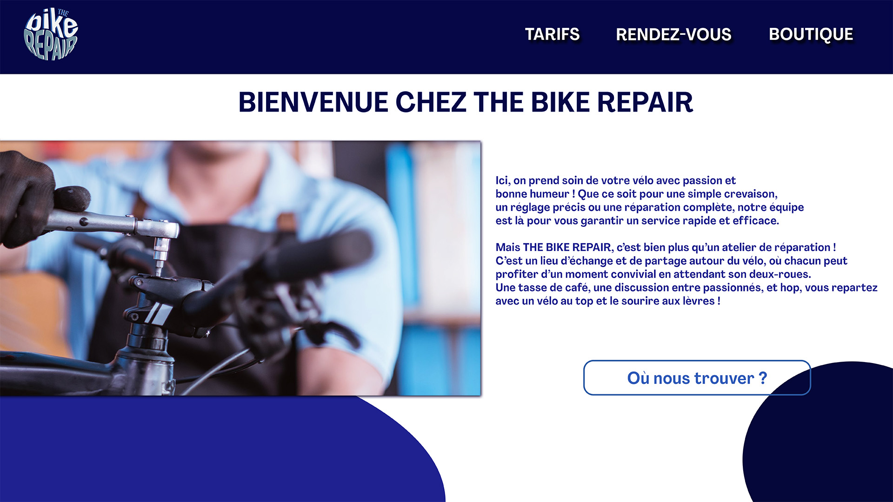
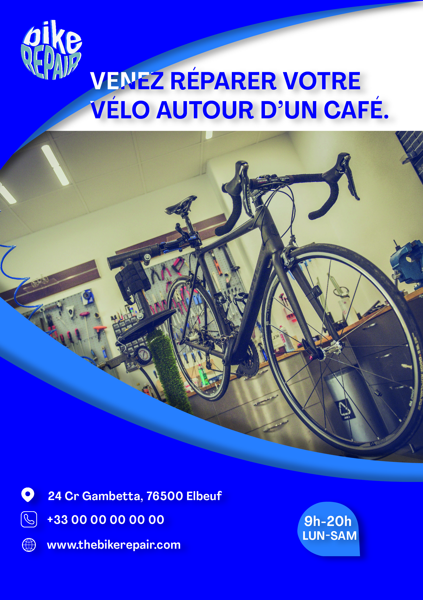
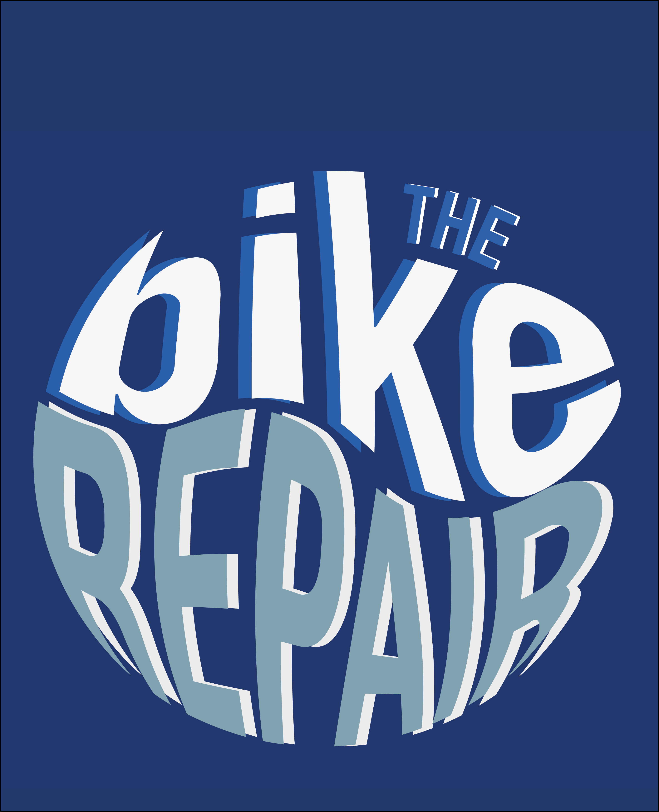

Ce projet consistait à concevoir l'identité d'une marque d'un garage de vélos tout en y mêlant de la convivialité.
Nous étions donc sous la contrainte de devoir garder les codes de la convivialité tout en essayant d'utiliser aussi ceux d'un garagiste de vélos.
Le travail a impliqué la création de différents supports tels qu'une affiche ou un site web fictif que nous devions par la suite intégrer dans une charte graphique.


Sur ce projet, j’ai été impliqué à plusieurs niveaux :
• Création d'une identité d'une marque
• Réalisation d'une affiche
• Réalisation d'un logo
• Réalisation d'un wireframe
• Réalisation d'un flyer
• Réalisation d'une charte graphique
Ce projet m’a permis de consolider mes compétences en infographie notamment mes compétences sur Adobe Illustrator.


